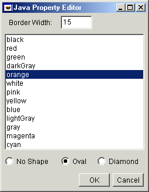

In addition to using the Properties view to change the initial state of a Java bean, some Java beans can supply a customizer class. Defined in the JavaBeans specification, a customizer is an AWT or Swing component that is able to provide a richer user interface to change the Java bean. Whether a Java bean has a customizer is determined by its BeanInfo. This is covered in greater detail in the section on writing customizers.
- Select the Java bean in either the Design view or the Java Beans view.
- Click the toolbar button
 , which is enabled only if there is a customizer defined
for the Java bean. After clicking the button, a modal customizer
dialog opens. Because the customizer opens in the JVM that runs the Java beans
on some platforms, it may not show up in front of the IDE and you may need
to select it on the task bar to make it visible. If the
customizer class is an AWT or Swing component, then it will be shown inside
a dialog together with the OK and Cancel buttons.
, which is enabled only if there is a customizer defined
for the Java bean. After clicking the button, a modal customizer
dialog opens. Because the customizer opens in the JVM that runs the Java beans
on some platforms, it may not show up in front of the IDE and you may need
to select it on the task bar to make it visible. If the
customizer class is an AWT or Swing component, then it will be shown inside
a dialog together with the OK and Cancel buttons.
- As you use the customizer, it updates the live Java bean. Click OK to confirm the changes, or click Cancel to discard the changes and restore the Java bean to its previous state.